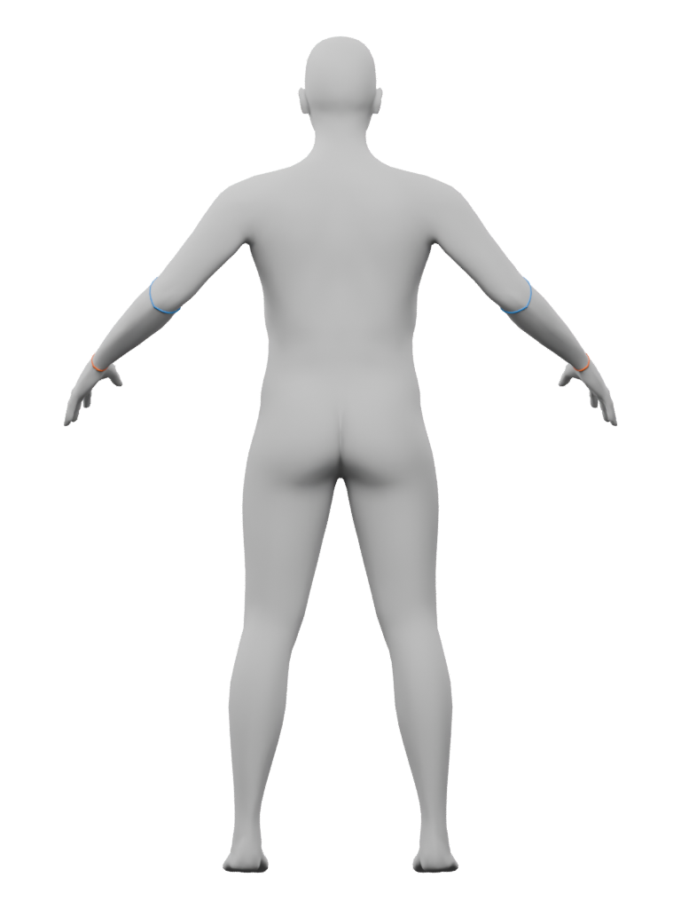
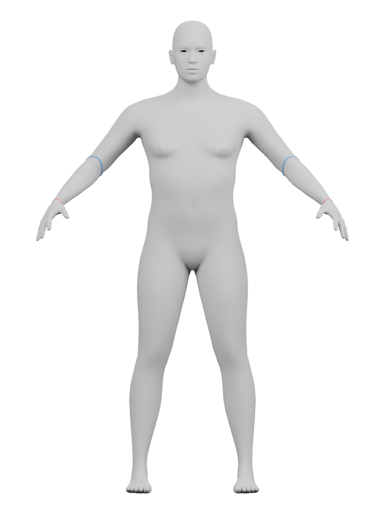
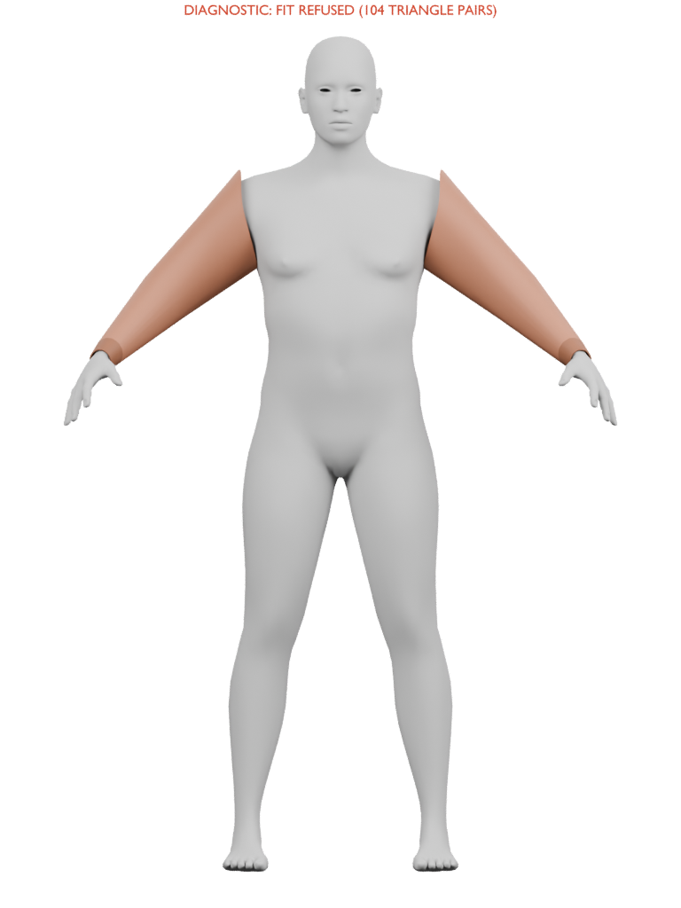
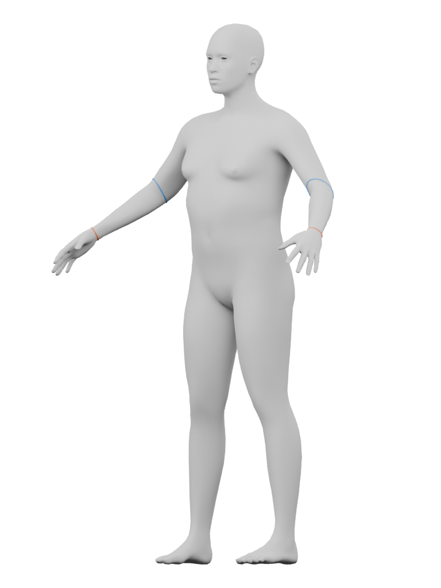
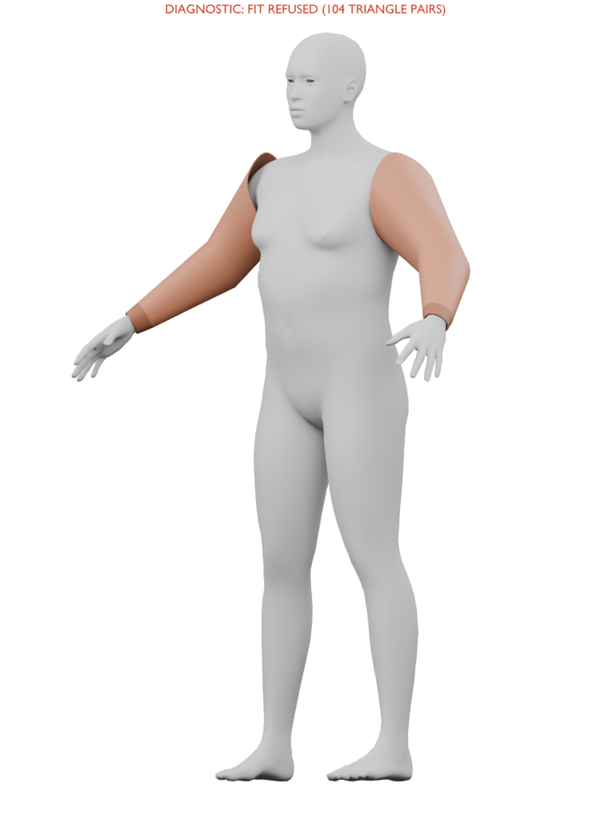

Diagnostic only: fit refused. 104 strict body/sleeve crossing triangle pairs. Taper and darker wrist-band direction remain useful construction evidence; raised shoulder rims and underarm tabs prevent wearable or assembled-jacket acceptance.
Original editable geometry has lining, thickness rims and UVs. The gray body is a source observer; auxiliary eyes/hair/rig/keys are omitted. Complete character, jacket torso/armhole joins, fabric finish, coverage and motion remain open. Editable Blender file · Receipt and limits · Root image judgment · Original bomber drawing




